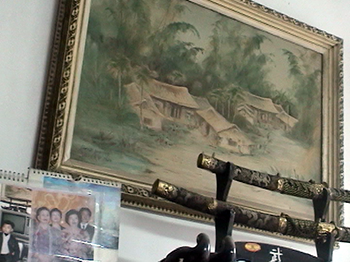

從在地耆老們的口述歷史之中，我們得以見證了社子島發展的軌跡。從他們臉上的皺紋，成就了社子島的歷史，從他們泛白的頭髮，彩繪了社子島的圖像，從他們豐富的生命故事，璀璨了社子島的內涵，感謝曾經為社子島和富安國小付出的所有英雄。
| 姓名 | 出生年 | 紀實 |
|---|---|---|
| 陳懿軒 | 民國4年(1915年) | 高壽九十一歲，貌似南極仙翁，是位耳聰目明、快樂勤勞的長者。 |
| 李鐵國 | 民國13年(1924年) | 對地方廟坤天亭發展史如數家珍，是坤天亭幕後重要推手。 |
| 陳懿墩 | 民國13年(1924年) | 自十七歲即擔任里長，達五十年之久，對社子島地方公益、農田水利等十分熱心。 |
| 洪曜平 | 民國13年(1924年) | 是位遊學日本的質樸畫家，目前擔任地方藝文團體延平畫會之指導老師，一幅「社子島風情」，成為富安「傳校之寶」。 |
| 林財益 | 民國13年(1924年) | 是位對生活滿足、感恩的長者，更成為子孫們的踏實典範。 |
| 陳萬成 | 民國17年(1928年) | 兒時曾一鏟鏟、一桶桶提回淡水河泥沙，協助填高校地。 |
| 李天從 | 民國18年(1929年) | 樸實可親、深具傳統美德，勉勵後輩「讀書」才能出頭天。 |
| 張松橇 | 民國20年(1931年) | 前半生克勤克儉的維護家人、子女，如今生活悠遊自在。 |
| 李阿兩 | 民國21年(1932年) | 當年小學生活雖然頑皮，但很得老師的疼愛，生活雖然困乏，卻不忘踏實、努力。 |
| 林王阿月 | 民國21年(1932年) | 個性獨立自主，早年盡心盡力撫育兒女，如今卸下重擔，生活怡然自得。 |
| 呂朝北 | 民國27年(1938年) | 社子島南管樂鼻祖，更是青年學子學習南管的活字典。 |
| 王公侯 | 民國27年(1938年) | 年輕時是社子島內唯”二”的憲兵隊員之一，閒暇時也是地方水利會、景安宮之重要護持者。 |
學生訪問洪曜平先生紀錄
爺爺為什麼喜歡畫畫？
我是從小就喜歡畫畫，因為以前世界上公認的，畫畫的孩子不會做壞。還有這幾年的畫家比較欣賞，所以練成畫。
爺爺你覺得畫畫對生活有什麼影響？
有啊，人格、修養、學習和學問等，種種都有幫助。
爺爺平常就喜歡畫畫嗎？對對對
那時候是怎麼想學的呢？
以前看到日本的畫家在日本風評比較好，因為沒有要參加政治的問題，畫畫的畫家比較輕鬆、比較自由。不但如此，畫面好像真的一樣，讓我很欣賞，所以從小五開始學畫。
那學校的老師有教嗎？
學校的老師當然有教呀，國語、數學、修身都有、美術，美術就是畫畫，還有歷史、地理都有。
爺爺你為什麼畫畫可以畫這麼好？你是怎麼練習、努力的？
對，以前到現在已經劃了這麼久了，當然畫得比較正確。看東西比較細的部分，比較仔細的部分，我會有研究起來，而不是走馬看花；有的一般人家看東西走馬看花，看一眼掃過去，沒有深入、仔細。所以看一個東西，好像看花、植物、動物，仔細看他的姿態。
爺爺小時候學畫畫有碰到什麼困難嗎？現在呢？
以前的困難就是教科書、參考書，還有錢啦，大部分講起來就是錢的問題，以前比較…你們現在不知道，以前一般老百姓都是很苦的。但是我家族是有錢，但是比現在起來還是太窮了，現在每一個家庭都很富裕，那以前大家都是…以前要買腳踏車比現在大台的機車還困難。知道嗎？現在一台腳踏車兩千塊，以前要做老師、警察的兩三個月的薪水才可以買得起一台腳踏車，那麼困難。
爺爺你比較喜歡畫什麼題材呢？
題材第一是山水、第二花鳥、第三動物，第四就是美人和其他的東西這樣。
為什麼？
一般社會上比較喜歡的，就是山水比較喜歡、還有花鳥，所以畫畫大部分就是山水和花鳥，(日本)花鳥四君子裡面就是以花鳥為主minakiku(日文名字)就是花鳥。
爺爺你認為國畫和西畫有什麼不同？
對，你問得很好。國畫、西畫為什麼不同，因為油畫，西洋話叫做oil painting,國畫叫做chinese brush。我們國畫的學問比較高，為什麼呢，你黑墨畫下去，一筆畫下去，不能改的。油畫那就是不行沒關係，怎麼樣改都可以。知道嗎？他畫拓下去再改沒關係，我們國畫不能改的，越改越描越黑，懂嗎？
一筆要完成？
嗯，一筆要完成。不但這樣，也要寫字，也要題詩詞，知道嗎，所以國畫比較難，油畫不用。油畫畫起來畫不好再蓋下去，只要寫自己的名字，這樣就好了，沒有什麼題字。
爺爺那你會畫西畫嗎？
有，後面那個就是由畫。油畫以前我畫了很多，為什麼呢，民國50多年那個時代，以前美軍顧問團，美國人來台灣政府的顧問團，來台灣很喜歡油畫，所以那時候就是畫很多的油畫，拿出去現在的圓山大飯店，放在那邊，XXXXXX(英文名字)去了裡頭買了很多。
- 
那個油畫看起來好像立體的喔！
油畫看起來比較立體，但是我剛才說了，畫要學油畫會比較快一點，為什麼呢？國畫差不多要學十年才可以出師，知道嗎？
那爺爺有煩惱嗎？
當然煩惱也是有啊！有的時候，比如說：家庭、大小，還有錢的問題、欠用的東西，困擾煩惱的地方當然每個人都有。
所以現在也還有？
沒有，現在孩子已經結婚了很大了，大人了他自己會…只有教學生而已。
媽媽說你畫雞畫得很漂亮！
嘿，雞、還有所有的動物畫了很多。
像那個老虎要看是要…？
要看等一下可以到後面拿好幾張給你們看，再問下去~
爺爺你覺得學生畫得好嗎？
做學生那時候當然畫得比較好啊~全校差不多我可以代表學校去參加比賽。
(暫告一段落，請見下回分曉)
資料來源：富安國小60週年校慶校友洪曜平先生訪問紀錄影片、臺北市瑠公農田水利會社子工作站文史資料

- Q1：以前和現在不同或相同？ A：以前的教育不是很發達，所以都用實際探訪來學習，現在則是有學校來教導，與以前有很大的不同。 Q2：以前的好或不好？ A：以前的好事可以實際去探訪那位人物，以前的不好是教育沒有很發達 以前的社子島培養出了許多的人才，各有各的專長與優等，有些是會寫書法的人才，有些是學習的好人才。